<div class="decree container">
    <div class="decree__wrapper">
        <div class="decree__wrapper--img">
            
        </div>
        <div class="decree__wrapper--text">
            
            <p>Prezident ToshTech universitetini tashkil etish toʻgʻrisidagi farmonni imzoladi.</p>
            <p>Yangi tashkil etilgan universitet moliyaviy, akademik va tashkiliy mustaqillikka ega bo'ladi. Birinchi
                bosqichda joriy
                yilda bir yillik o‘quv kurslari yo‘lga qo‘yiladi.
                Kelgusi yildan boshlab universitet bakalavriat yo‘nalishlari bo‘yicha mutaxassislar tayyorlaydi. 2027
                yildan boshlab
                talabalar magistratura va aspiranturaga oʻqishga kirishlari mumkin boʻladi.
                Talabalar grant va kontrakt asosida oʻzbek va chet tillarida oʻqitiladi. 2029/2030 yilgacha qabul
                qilingan talabalar
                davlat grantiga ega bo‘ladilar. 
            </p>
            <div class="decree__wrapper--text-backimg">
                
                <div></div>
            </div>
        </div>
    </div>
</div>